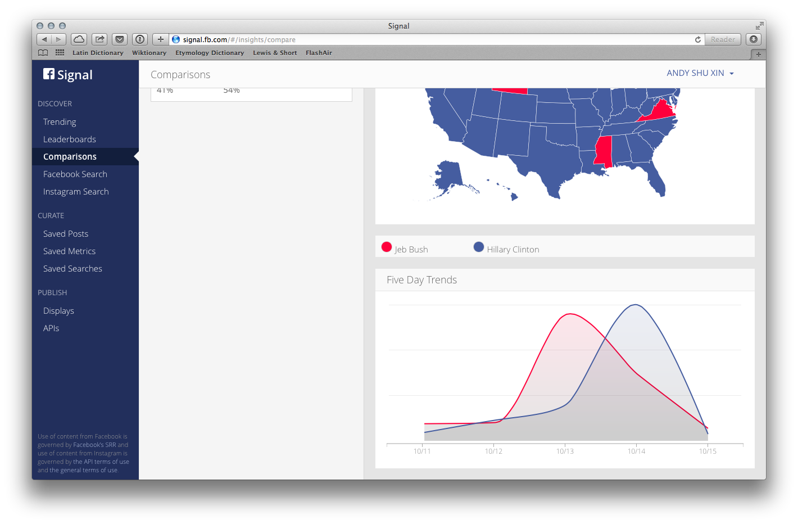
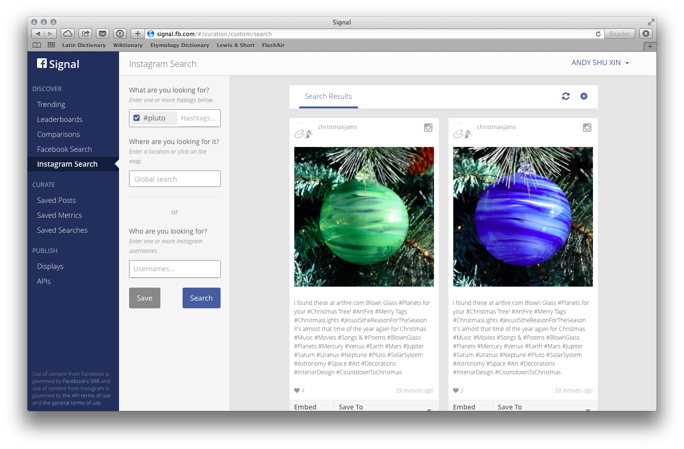
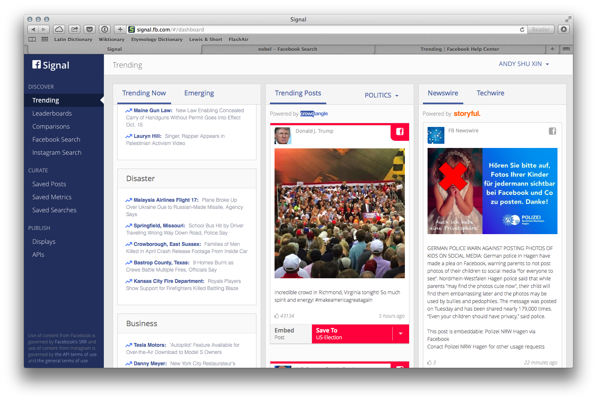

2015年9月17日，Facebook 推出 Signal，專為新聞家設計，用來在 Facebook 和 Instagram 上發掘新聞線索。12個小時之前，我們收到了Signal試用權限，下面為大家介紹我們試用Signal的經驗。
Signal 目前功能可以分為四類：
- 探索（發現還不知道的的線索）；
- 搜索（調研、比較已知的關鍵字）；
- 收納（收納相關的話題和信息）；和
- 發佈（分享調研成果）。
探索
探索功能分兩部分：一個是「Trending」，顯示熱點事件；一個是「Leaderboards」，顯示熱點人物。
Trending是這樣子的：
除了提供Facebook用自家算法判斷的熱點消息，還有CrowdTangle和Storyful各自追蹤的熱點。（CrowdTangle和Storyful提供社交媒體追蹤、內容發掘服務。）
Trending講事，Leaderboards則講人，顯示每一天最多人談論的人物排行。
點擊事件或人名，還可以集中看關於這個話題的討論。
搜索
Signal的搜索功能乏善可陳。
主要搜索功能是關鍵詞討論量比較：

還有Facebook和Instagram的搜索，但是搜索效果並不出彩，可能還不如Facebook和Instagram的站內搜索。

收納
Signal提供消息收納功能，可以建立文件夾（Collection），收藏一組相關的信息。目前，消息、數據和搜索結果只能分開存檔，不能放到一起。

發佈
Signal的發佈功能主要針對之前在收納中建立的文件夾，有兩種發佈方式，內置方式和導出JSON。
內置的發佈功能要求文件夾至少有26篇文章才能發佈，但是似乎有bug，我們創建的有30篇文章的文件夾也顯示發佈不了，於是我們也無法測試了。
文件夾內容也可以導出JSON，只要再寫個前端，就可以用自己喜歡的方式顯示收藏夾了。
具體的API寫得不太清楚，其實是要POST一個JSON過去，具體格式像這樣：1
2
3
4
5
6{
"customerId": "YOUR_CUSTOMER_ID_FROM_FACEBOOK",
"type": {"$in":["text", "image"]},
"source": {"$in": ["facebook.com", "instagram.com"]},
"limit": 10
}
就會得到類似這樣的反饋：1
2
3
4
5
6
7
8
9
10
11
12
13
14
15
16
17
18
19
20
21
22
23
24
25
26
27
28
29
30
31
32
33
34
35
36
37
38
39
40{
"entries": [
{
"id": "45623437315_10154528665262316",
"source": "facebook.com",
"type": "image",
"author": "Stars and Stripes",
"icon": "https://scontent.xx.fbcdn.net/hprofile-xpf1/v/t1.0-1/p50x50/222454_10150338647532316_7301889_n.jpg?oh=154900aa9099bcf05c61426fc607ce8d&oe=568A9741",
"published": 1444884240000,
"text": "Thursday’s front page:\n\n• PHOTOS | Afghan aircraft form lifeline to besieged cities: www.stripes.com/1.373263\n\n• Navy considering expanding paternity leave, top Navy officer says: www.stripes.com/1.373178\n\n• Carter: US will sail near Spratly Islands any time it wants: http://www.stripes.com/1.373151\n\n• Clinton, Sanders dominate Democrats' 1st go on the debate stage: www.stripes.com/1.373183",
"likes": 31,
"link": "https://www.facebook.com/45623437315/posts/10154528665262316",
"ssMetaData": {
"facebookId": "45623437315_10154528665262316",
"images": [
{
"source": "https://scontent.xx.fbcdn.net/hphotos-xtp1/v/t1.0-9/s720x720/12111948_10154528665262316_5154848867614938223_n.jpg?oh=11c051355d4a0da54a31fe13989d222d&oe=56C95F7D",
"width": 549,
"height": 720
}
]
},
"ssFacebookPostId": "45623437315_10154528665262316",
"ssFbData": {
"from": {
"name": "Stars and Stripes",
"id": "45623437315"
},
"name": "Timeline Photos"
},
"_feedItem": true,
"moderationFlags": {
"stageOneModeration": true
}
},
],
"olderThan": {
"accounts_server": 1444833155000
}
}
結語
目前 Facebook Signal 的核心競爭力在於探索熱點事件——搜索功能還不成熟；收藏和發佈功能似乎有潛力，但應用場景並不清晰。
無論如何，Facebook 涉足新聞業野心勃勃，Signal 想必也會繼續演進，值得持續關注。
申請試用Facebook Signal，請在此填表：
https://www.facebook.com/help/contact/1584814605121989
花絮
Signal 是用 Google 家的 Angular 框架搭建的，而沒有用 Facebook 自己的 React。

(Signal 用的是 Angular 1.2.28，是個舊版本，發佈了快一年了。)
這是個什麼概念呢？就好像法拉利造了個新車，外面看上去是法拉利，開起來也像法拉利，卻用了是隔壁寶馬五年前造的引擎……
（當然，互聯網互相借用技術也是司空見慣的事，比如 Google Chrome 的一開始的渲染引擎用的是 Apple 給 Safari 做的 WebKit。那麼究竟爲什麼 Signal 這麼選？我們也不知道，如果讀者您知道，請留言告訴我們。）